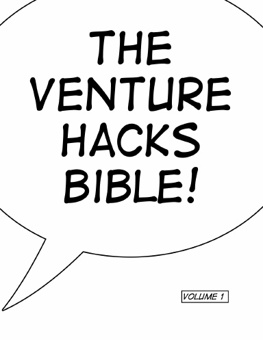
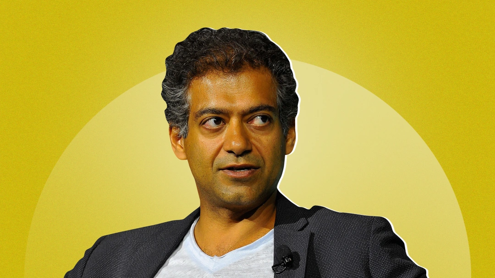

THE VENTURE HACKS

The Almanack Of Naval Ravikant

This blog is about Naval Ravikant insight and thinking

Twitter Blog Clubhouse Airchat
Naval Ravikant is an angel investor, podcaster, and entrepreneur. He is best known for being the CEO, chairman, and founder of AngelList. However, others may know him from his other entrepreneurial activity as the founder of Epinions, The Hit Forge, Genoa Corp, Vast.com, and MetaStable, or through his blogging and podcasting activities at Venture Hacks. Naval Ravikant hosts his own podcast called Naval and has been invited to participate in several popular podcast shows, such as The Joe Rogan Experience, Spartan Up, and The Tim Ferris Show
“Social media isn’t social – it’s performative. Where’s the chitchat, the banter, the easy laughter? We made something new. Push-to-talk, whenever you want. With perfect transcripts and AI art. A dinner party in your pocket. Follow @getairchat…Never feel alone again,” tweeted Naval about the app
Airchat is currently in beta testing, with an iOS beta being live currently and an Android beta on the way. Those interested can join a waitlist by heading to gertairchat.com and registering using your mobile number and Twitter handle. Airchat is free to use. Get airchat
In 2009, Naval Ravikant cofounded AngelList with Babak Nivi in San Francisco, California with the goal of connecting founders and entrepreneurs more efficiently. The first version of AngelList was unofficially launched in 2007 on the Venture Hacks blog, and it was originally called AngelBase. The official AngelList website was officially launched in 2011; it was initially mostly closed to people outside of the AngelList community, but in 2012 AngelList became an open website. AngelList acquired ProductHunt on December 1, 2016 for $20 million.